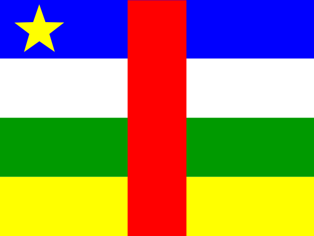
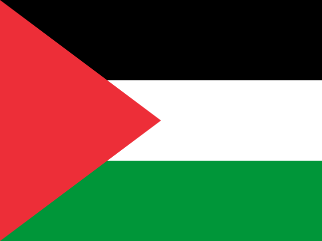
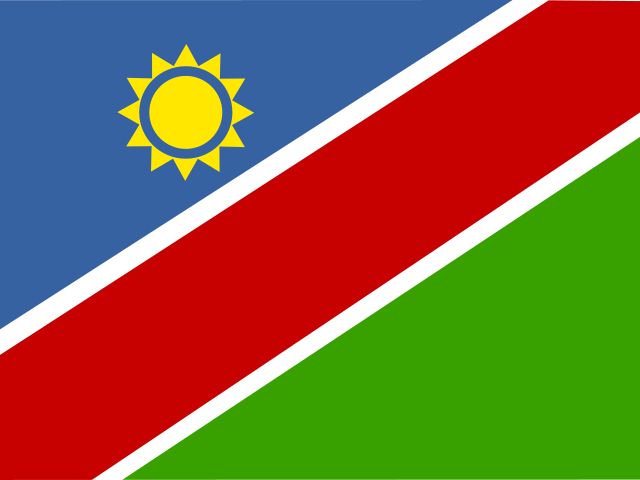
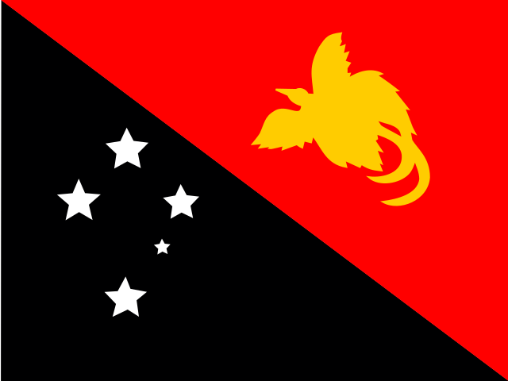

Question 21Verified completed result

Country (revealed after completion)
Central African Republic
Currency🟩 Independent
Your answer: FrancCorrect: Central African CFA Franc (XAF)
First answer correct, Independent.
Edition 1 · Q21–Q30
| Score | Currencies |
|---|---|
| Pure | 6/10 |
| Pure + Assisted | 7.5/10 |
| Independent | 6 |
| Assisted | 3 |
| Wrong | 1 |
| Cancelled | 0 |
| Score | Currencies |
|---|---|
| Pure | 23/30 |
| Pure + Assisted | 25.5/30 |
| Independent | 23 |
| Assisted | 5 |
| Wrong | 2 |
| Cancelled | 0 |

First answer correct, Independent.

First answer correct, Independent.

Attempts (in order): Dinar → Dirham
Unassisted correction Dinar → Dirham; Independent +1.

Independent: 'shikel' accepted as phonetic spelling of shekel

First answer correct, Independent.

First answer correct, Independent.

Attempts (in order): Pound → Rupee → Franc → Shilling → clue → Dollar
After five prior attempts, requested currency clue and correctly answered Dollar: Assisted 0 Pure, +0.5 P+A

Attempts (in order): Dzonkha → clue → tangaska → don't know
Conceded with 'don't know' after clue and incorrect tangaska. Wrong 0.

Attempts (in order): Peso → Dollar → clue → gurani
'gurani' accepted as recognizable phonetic spelling of Guarani after clue; Assisted.

Attempts (in order): Dollar → clue → clue → kisa
'kisa' accepted as a one-letter error of Kina after clue, respecting earlier referee precedent; Assisted.
| Q | Flag | Correct Country | Your Currency | Correct Currency (full name + ISO) | Currency Result |
|---|---|---|---|---|---|
| 21 | Central African Republic | Franc | Central African CFA Franc (XAF) | 🟩 Independent | |
| 22 | | Canada | Dollar | Canadian Dollar (CAD) | 🟩 Independent |
| 23 | | Morocco | Dirham | Moroccan Dirham (MAD) | 🟩 Independent |
| 24 | Occupied Palestine | shikel | New shekel (ILS) | 🟩 Independent | |
| 25 | | Sweden | Krone | Swedish Krona (SEK) | 🟩 Independent |
| 26 | | Andorra | Euro | Euro (EUR) | 🟩 Independent |
| 27 | Namibia | Dollar | Namibian Dollar (NAD) | 🟨 Assisted | |
| 28 | | Mongolia | don't know | Mongolian Tugrik (MNT) | 🟥 Wrong |
| 29 | | Paraguay | gurani | Paraguayan Guarani (PYG) | 🟨 Assisted |
| 30 | Papua New Guinea | kisa | Papua New Guinean Kina (PGK) | 🟨 Assisted |
30 / 195 countries · 30 / 195 scored currency answers